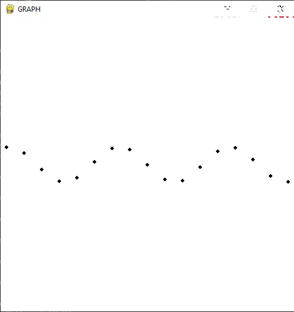

set up and prerequisites
before starting to code there is some things that you should have installed in your laptop, the first thing is python version 3.7 or higher.
you should also install Pygame using pip, which is the python package manager as follows:
$ pip install pygame
also, having some OOP knowledge is kindo of required be cause I am making a graph object and there would somethings that you would not quiet fathoum if you did not have understood how OOP in general works, plus, if you don't understand atleast the basic of python, you would just waste your time, so before reading or copying the code for use, try to understand, since this is the purpose of the post, understanding!!
what exactly is pygame ?
what is pygame! predictable question, since google have anything we want, I just googled it and found this definition:
Pygame is a cross-platform set of Python modules designed for writing video games. It includes computer graphics and sound libraries designed to be used with the Python programming language.
it is kind of useful, but I personnally define pygame this way:
pygame is a collection of files, modules, code, resources, concepts and mechanisms that was implemented in python to make computer graphics and visuals, it is cross-platform, which means it can work in linux, windows, mac Os, android, also IOS.
it is specialized in working with 2D games, 2D graphics, and you can make with it alot of awesome things.
one of these things is data visualizations, but this one needs a little bit of creativity/math knowledge since it is not the main purpose of the library.
initializing pygame
to initialize pygame the first thing that we should be doing is importing the whole library for use, with this line of code.
import pygame
then we should type in some boiler plate code, which invokes pygame and sets some props such as the title of the window, the FPS, and also the color of the window.
class Grapher:
clock = pygame.timeClock()
pygame.init()
pygame.display.
set_caption("GRAPH")
def __init__( self, background, width, height):
self.background = background
self.width = width
self.height = height
self.window = pygame.display. set_mode((
self.width,
self.height
))
self.window.fill(self.background)
self.run = True
after getting initialization out of the way, we would like to make the run_() function to display the window.
so this would be by making a little while loop as follows:
def run_(self, x_axis, y_axis):
self.clock.tick(30)
while self.run:
for event
in pygame.event.get():
if event.type == pygame.QUIT:
self.run = False
self.plot(x_axis, y_axis)
pygame.display. update()
pygame.
quit()
Note: everything I have implemented is only boiler plate code, that means if you will be coding alot in pygame, you would do the same thing for quiet a while, however don't even
think of memorizing this, it is stupid to memorize boiler plate code.
now if initialize the Graph class we these configs:
width = 500
height = 500
background = (255, 255, 255)
x = "test"
y = "test
G = Grapher(background, width, height)
G.run_(x, y)
in here we will get a white window with the dimentions 500x500
but the plot functions was not implemented tp do anything special:
implementing the plot function then plotting the sin, cos, tan functions
well, since we have implemented the functionality we need to draw in the window, now we have a move crucial task in hand which is plotting.
the first thing is to get the origin then zip the data, so that every x has an associated y number.
def plot(self, x_axis, y_axis):
originx, originy = self.width / 2, self.height / 2
data = zip(x_axis, y_axis)
now, since we have the data arranged the way that we wanted and we can identify our origin, we can pretty much make the graph using a simple for loop and circles with radius 3 to represent our points, in the
plot() functions we add:
for x, y
in data:
pygame.draw.circle( self.window, (0, 0, 0), (originx+x*30, originy+y*30), 3)
as you see I multiplied the chords with a constant, to zoom because it would not be as obvious, and you can even experiment with it and you will see why I did that, also I have added the origins originx and originy to make the middle of the screeen an origin of the graph.
to visualize the functionality of the code we wrote we can invoke the class then pass two lists of number to plot them
Note: we are going to plot the sin wave
from math import sin
Graph = Grapher((255, 255, 255), 500, 500)
Graph.run_([ i for i in range(-100, 100)], [ sin(i) for i in range(-100, 100)])
the output would be:

if we want it to be more accurate we need to add more points, or in other words add more percesion, and that by making the range wider, then apply multiply the coordinates to a decimal constant, for instance 0.01, the smaller the more the gap between the points gets more tight therefore we can see the graph as a coherent wave.
here is the code for that
Graph.run_([ i*0.01 for i in range(-10000, 10000)], [ sin(i*0.01) for i in range(-10000, 10000)])
the output is:

to plot the cos, tan we do the same thing, the only difference is the function we use in the second passed list, instead of import sin and using it, we import the function we need to plot then we use it, for example if we want to visualize the tan function.
from math import cos
Graph.run_([ i*0.01 for i in range(-10000, 10000)], [ cos(i*0.01) for i in range(-10000, 10000)])
the output is:

it is identical to the sine wave but if we do the same thing for the tan, we get this output:

plotting a custome function
to plot a cusome function, we are going to use the same instance, but first we are going to define the function:
def power(x):
return x ** 2
using the Grapher instance and the same implementation above:
Graph.run_([ i*0.01 for i in range(-10000, 10000)], [ power(i*0.01) for i in range(-10000, 10000)])
Output would be:

note: the graph is upside down because the coordinate system is still a little (y coords start from the top to the bottom so..) bit off in pygame but fixing is not that hard, we can just do this:
Graph.run_([ i*0.01 for i in range(-10000, 10000)], [ power(i*0.01)(-1) for i in range(-10000, 10000)])
much better ?:

click this link to download the script and experiment with it, hopefully you would understand.
Grapher.py